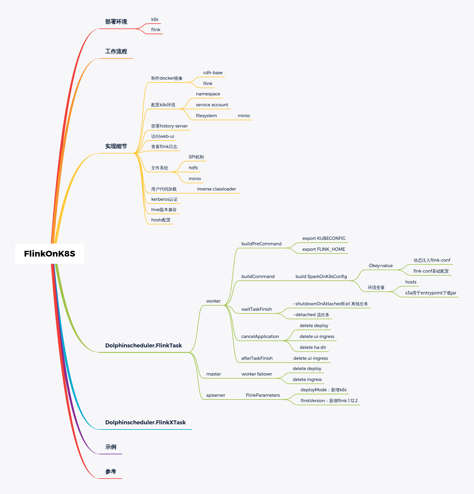

dolphinscheduler的flink任务默认支持yarn。
flink任务和spark任务支持类似
环境说明
dolphinscheduler版本：1.3.6
flink版本：1.12.2

apiserver 向k8s提交任务，需要新增以下基础配置
kubeconfig：包含k8s的token，k8s-client初始化需要
master：k8s apiserver的地址
image：制作好的镜像，提交到harbor的地址
另外FlinkParameters需要新增
deployMode:kubernetesApplication
flinkVersion:1.12.2
worker 由于我采用的是flink native方式，不是google的spark on k8s operator。
另外可新增１个spark_on_k8s.json配置文件定义环境参数 1 2 3 4 5 6 7 { "k8sIngressHttpUrl" : "http://ip:port" , "k8sNameSpace" : "flink" , "flinkContainerImage" : "flink:latest" , "flinkAppServiceAccountName" : "flink" , "flinkVersion" : "1.12" }
flink基础配置flink-conf.yaml1 2 3 4 5 6 7 8 9 10 11 12 13 14 15 16 17 18 19 20 21 22 23 24 25 26 27 28 29 30 31 32 33 34 35 36 37 38 39 40 41 42 43 44 45 kubernetes.rest-service.exposed.type: ClusterIP kubernetes.container.image.pull-policy: Always kubernetes.jobmanager.cpu: 1.0 security.module.factory.classes : ; security.context.factory.classes: ; jobmanager.rpc.address: localhost jobmanager.rpc.port: 6123 jobmanager.memory.process.size: 1gb taskmanager.memory.process.size: 1gb taskmanager.numberOfTaskSlots: 1 parallelism.default: 1 jobmanager.execution.failover-strategy: region akka.ask.timeout: 120 s web.timeout: 120000 jobmanager.archive.fs.dir: s3a://flink/__FLINK__/historylog historyserver.archive.fs.dir: s3a://flink/__FLINK__/historylog historyserver.web.address: 10.199 .150 .161 historyserver.web.port: 30067 historyserver.archive.fs.refresh-interval: 1000 execution.checkpointing.timeout: 10 min execution.checkpointing.max-concurrent-checkpoints: 1 execution.checkpointing.mode: EXACTLY_ONCE execution.checkpointing.unaligned: false execution.checkpointing.externalized-checkpoint-retention: DELETE_ON_CANCELLATION state.backend: filesystem state.backend.incremental: true state.backend.fs.checkpointdir: s3a://flink/__FLINK__/checkpoints/backend state.checkpoints.dir: s3a://flink/__FLINK__/checkpoints/metadata state.savepoints.dir: s3a://flink/__FLINK__/savepoints state.checkpoints.num-retained: 10 s3.access-key: ak s3.secret-key: sk s3.endpoint: http://ip:port s3.path.style.access: true
master flinkTask执行的worker宕机时，master会对worker执行容错，kill掉所有正在执行的task。
示例 1 2 3 4 5 6 7 8 9 10 11 12 13 14 15 16 17 18 19 20 21 22 23 24 25 26 27 28 29 30 31 32 33 34 35 36 37 38 39 40 41 42 43 44 45 46 47 48 49 50 51 52 53 54 55 56 57 58 59 60 flink run-application \ --target kubernetes-application \ -Dkubernetes.config.file="/opt/flink/config/kube_config.yaml" \ -Dkubernetes.container.image="flink:latest" \ -Dkubernetes.namespace="flink" \ -Dkubernetes.service-account="flink" \ -Dkubernetes.rest-service.exposed.type="ClusterIP" \ -Dkubernetes.container.image.pull-policy="Always" \ -Dkubernetes.jobmanager.cpu="1.0" \ -Dkubernetes.cluster-id="flink-0-0-0-0-0" \ -Dkubernetes.flink.conf.dir="${FLINK_HOME}/conf" \ -Dkubernetes.flink.log.dir="${FLINK_HOME}/log" \ -Dsecurity.module.factory.classes=";" \ -Dsecurity.context.factory.classes=";" \ -Djobmanager.rpc.address="localhost" \ -Djobmanager.rpc.port="6123" \ -Djobmanager.memory.process.size="1gb" \ -Dtaskmanager.memory.process.size="1gb" \ -Dtaskmanager.numberOfTaskSlots="1" \ -Dparallelism.default="1" \ -Djobmanager.execution.failover-strategy="region" \ -Dakka.ask.timeout="120 s" \ -Dweb.timeout="120000" \ -Djobmanager.archive.fs.dir="s3a://flink/__FLINK__/historylog" \ -Dhistoryserver.archive.fs.dir="s3a://flink/__FLINK__/historylog" \ -Dhistoryserver.web.address="10.199.150.161" \ -Dhistoryserver.web.port="30067" \ -Dhistoryserver.archive.fs.refresh-interval="1000" \ -Dexecution.checkpointing.timeout="10 min" \ -Dexecution.checkpointing.max-concurrent-checkpoints="1" \ -Dexecution.checkpointing.mode="EXACTLY_ONCE" \ -Dexecution.checkpointing.unaligned="false" \ -Dexecution.checkpointing.externalized-checkpoint-retention="DELETE_ON_CANCELLATION" \ -Dstate.backend="filesystem" \ -Dstate.backend.incremental="true" \ -Dstate.backend.fs.checkpointdir="s3a://flink/__FLINK__/checkpoints/backend" \ -Dstate.checkpoints.dir="s3a://flink/__FLINK__/checkpoints/metadata" \ -Dstate.savepoints.dir="s3a://flink/__FLINK__/savepoints" \ -Dstate.checkpoints.num-retained="10" \ -Ds3.access-key="DYaDwXsj8VRtWYPSbr7A" \ -Ds3.secret-key="z7HAEhdyseNX9AVyzDLAJzEjZChJsnAf1f7VehE" \ -Ds3.endpoint="http://10.199.150.160:32030" \ -Ds3.path.style.access="true" \ -Djobmanager.memory.process.size="4G" \ -Dtaskmanager.memory.process.size="2G" \ -Dtaskmanager.numberOfTaskSlots="2" \ -Dcontainerized.master.env.KUBERNETES_HOST_ALIASES="127.0.0.1 localhost" \ -Dcontainerized.master.env.KUBERNETES_S3_ACCESS_KEY="ak" \ -Dcontainerized.master.env.KUBERNETES_S3_SECRET_KEY="sk" \ -Dcontainerized.master.env.KUBERNETES_S3_ENDPOINT="xxx:xxx" \ -Dcontainerized.master.env.KUBERNETES_S3_BUCKET="xxx" \ -Dcontainerized.master.env.KUBERNETES_REMOTE_MAIN_JAR="/flink/WordCount-1.12.2.jar" \ -Dcontainerized.master.env.KUBERNETES_LOCAL_MAIN_JAR="/tmp/WordCount-1.12.2.jar" \ -Dexecution.checkpointing.interval="1 min" \ -d \ -Dkubernetes.container.image.pull-policy=Always \ -c \ org.apache.flink.examples.java.wordcount.WordCount \ local:///tmp/WordCount-1.12.2.jar \ --input /opt/cdh/lib/flink-1.12.2/conf/flink-conf.yaml --output /tmp/flink-conf.yaml
参考